Scenario: These labs use the Solutions Demo Center (SDC) — a pre-populated ZDX environment with realistic demo data. You'll navigate the Performance Dashboard, Incidents Dashboard, Self-Service (Wi-Fi), Application Overview, and User Overview to understand ZDX's monitoring capabilities.
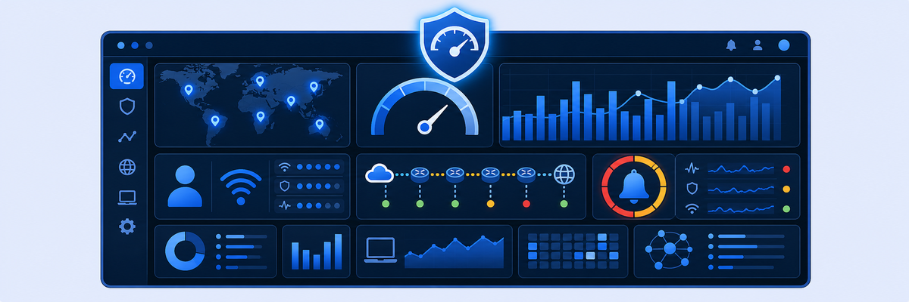
Time: ~20 minutes
💭THINK FIRST · ZDX DASHBOARDS
ZDX (Zscaler Digital Experience) measures the end-to-end quality of a user's experience with cloud applications — from their device's Wi-Fi, through the network path, to the cloud service. The ZDX Score is a composite metric: a lower score means worse experience. ZDX identifies whether the bottleneck is the device, Wi-Fi, the corporate network, the Zscaler service, or the application itself.
A user complains that Salesforce is slow. ZDX shows a ZDX Score of 35 (Poor). What does that score actually represent, and what are the next diagnostic steps to narrow down where in the path the problem exists?
The ZDX Performance Dashboard shows a geographic cluster of users with poor scores in the Asia region. What could cause a geographically correlated degradation — what would you look at next?
ZDX uses synthetic probes (web probes) to measure application performance. How do these probes work, and what is the key difference between a synthetic probe result and a user-reported complaint?
Q1 — MODEL ANSWER
A ZDX Score of 35 (Poor) indicates significantly degraded end-to-end experience. The next step is to click Analyze Score to see which factor is contributing most: Wi-Fi signal, DNS resolution time, TCP connect latency, server response time, or overall page fetch time. ZDX's Hop View shows which segment of the cloud path has elevated latency. If Wi-Fi is poor but DNS and server response are normal, the issue is local to the device. If all users in a region are poor but DNS and server are high-latency, the issue is likely the network path or the Zscaler service edge.
Q2 — MODEL ANSWER
A regional cluster suggests a shared infrastructure component: a Zscaler service edge serving that region, a cloud app's regional datacenter, or a major ISP route with degraded performance. Next steps: check the specific application's availability from that region, look at the cloud path latency for users in that region (Hop View), and check whether the issue correlates with the Zscaler service edge serving those users or with the application's regional endpoint.
Q3 — MODEL ANSWER
ZDX synthetic probes are small background tests that the ZCC agent runs periodically — fetching a known URL, measuring DNS time, TCP connect time, and page fetch time without the user doing anything. They provide continuous, objective performance data independent of user activity. The key difference from user complaints: probes are consistent and comparable over time, while user complaints are subjective, infrequent, and often reported after the problem has resolved. Probes can detect degradation before users even notice or complain.
SDC Credentials: Labs 14–16 use the Solutions Demo Center — a separate ZIA environment with demo data. Log in with the ZIA Admin User ID and Session Password from your Lab Access Instructions. These are different from your Student FQDN credentials used in Labs 0–13.
Task 14.1 — Log into SDC and Explore the Performance Dashboard
1 Log into the SDC console
Navigate to https://console.zscaler.com and log in with the ZIA Admin User ID from your Lab Access Instructions.
If prompted for MFA, skip or use the Skip option provided in the lab.
Navigate to ZDX → Performance Dashboard.
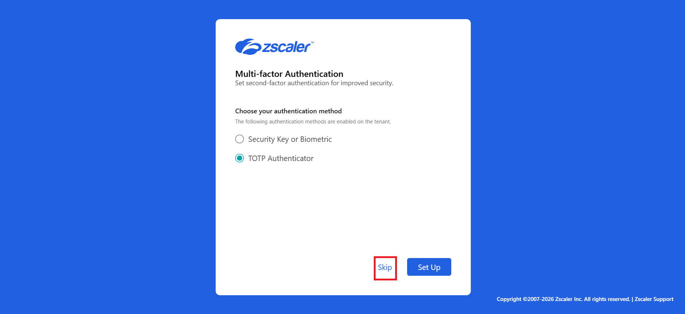
SDC login — use the ZIA Admin User ID from Lab Access Instructions. Skip MFA if prompted.
2 Explore the Performance Dashboard world map
The Performance Dashboard shows a world map with ZDX scores by geography.
Use the time range dropdown to select Last 24 Hours.
Look for geographic clusters of poor ZDX scores (red/orange areas).
Explore the Most Impacted Applications panel below the map.
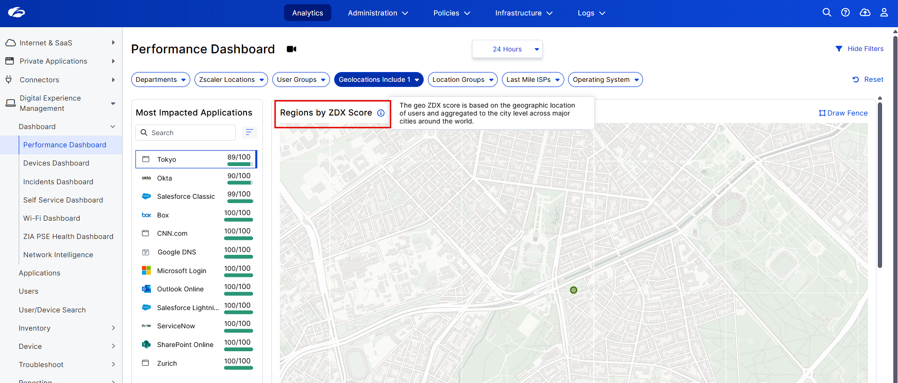
Performance Dashboard world map — geographic heatmap of ZDX scores. Red/orange areas have degraded digital experience.
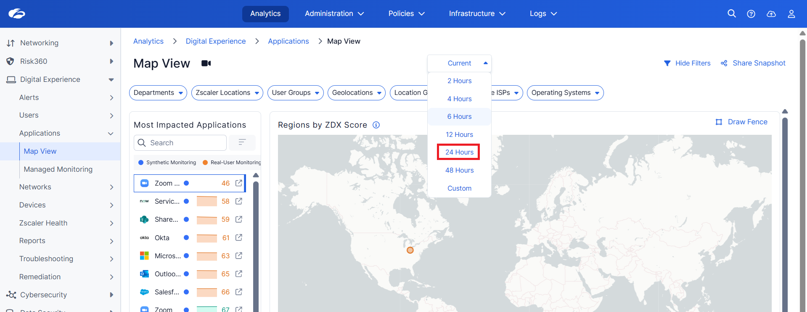
Time range selector — filter the dashboard to a specific time window to correlate degradation with known events.
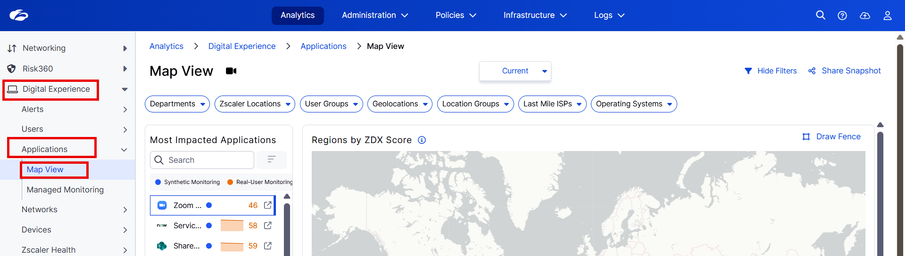
Most Impacted Applications — quickly identify which cloud apps have the worst ZDX scores across all users.
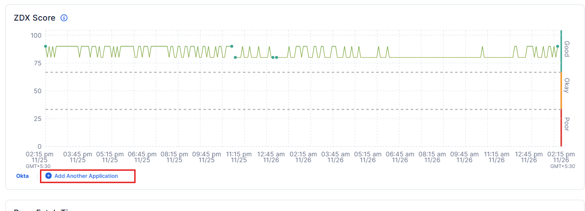
Filter strip — narrow the dashboard by application, location, or user segment to focus the investigation.
3 Filter by geography
In the map or filter panel, apply a geography filter (e.g., filter to Asia region).
Observe how the impacted apps and user counts change when scoped to a region.
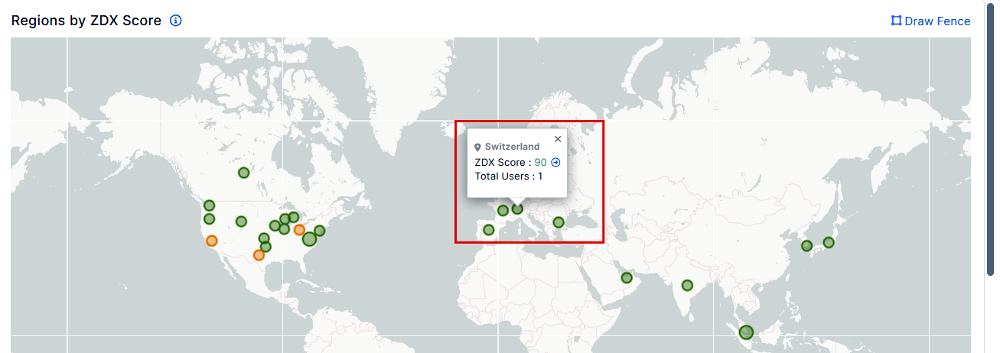
Asia region filter — scoping to a geographic area reveals which apps and users are impacted in that region specifically.
Task 14.2 — Explore the Incidents Dashboard
1 Navigate to the Incidents Dashboard
Navigate to ZDX → Incidents.
The Incidents Dashboard shows detected degradation events with epicenters on a map.
Click on an epicenter to view the affected users, applications, and time range.
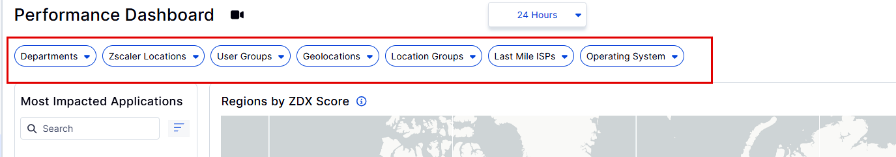
Incidents Dashboard — ZDX automatically detects and classifies degradation events. Filter by application, time, or severity.
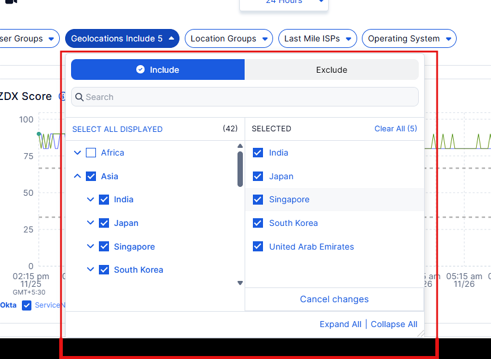
Incident epicenter popup — shows the impacted app, number of affected users, and location of the degradation event.
Task 14.3 — Explore the Self-Service Wi-Fi Dashboard
1 Navigate to Self-Service
Navigate to ZDX → Self-Service (or Wi-Fi under the dashboard options).
View Wi-Fi performance by access point and location.
Note the Wi-Fi score bars for different access points.
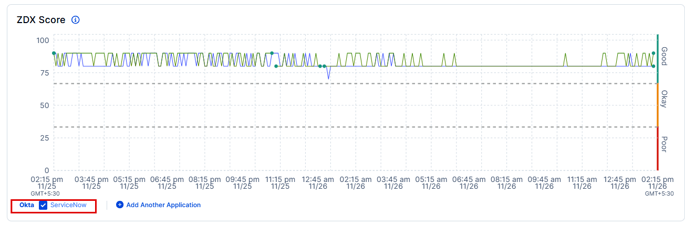
Wi-Fi Dashboard — ZDX correlates device Wi-Fi metrics (signal strength, SNR, channel utilization) across all monitored endpoints.
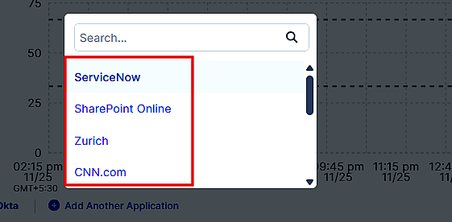
Wi-Fi score bars — visual comparison of Wi-Fi quality across access points. Low scores indicate potential Wi-Fi bottlenecks.
Task 14.4 — Explore Application Overview
1 Select an application and view its ZDX score over time
Navigate to ZDX → Applications.
Select an application (e.g., Okta) from the list.
View the ZDX Score over time graph.
View the Cloud Path Latency metrics.
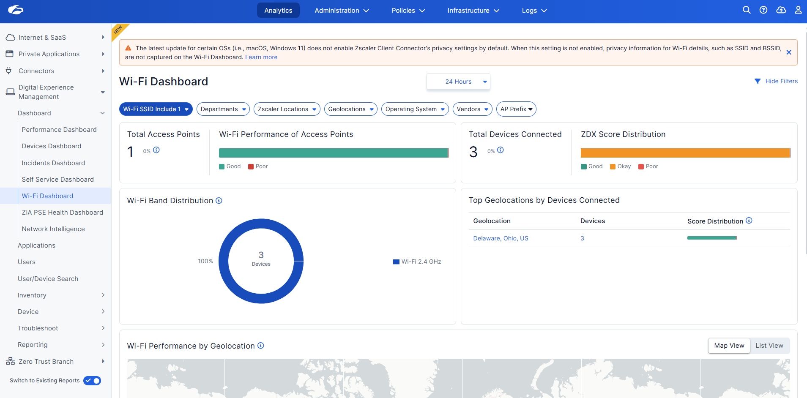
Applications overview — all monitored cloud apps with their current ZDX scores, user counts, and trend indicators.
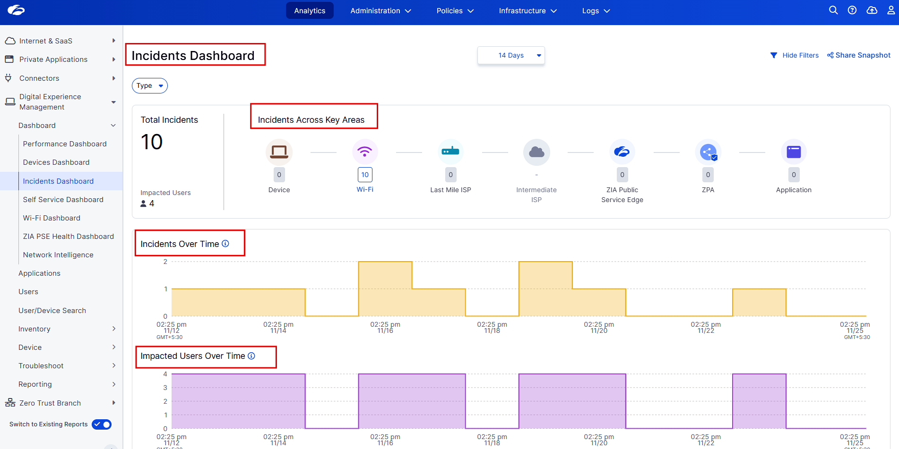
Filtered applications list — narrow to specific apps to compare ZDX scores across time.
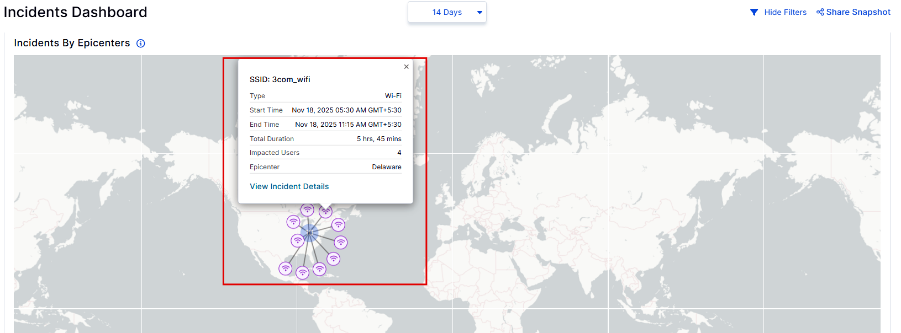
ZDX Score over time — continuous performance history for the application. Dips indicate degradation events.
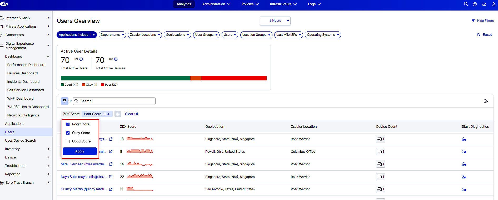
Cloud Path Latency — breaks down the total latency by segment: device → Wi-Fi → network → Zscaler ZTE → app server.
2 Compare two applications
Use the Add Another Application dropdown to add a second app (e.g., ServiceNow) for comparison.
Compare ZDX scores and probe metrics side-by-side.
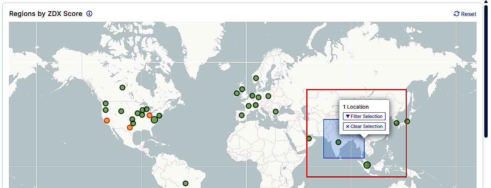
Add Another Application — compare two apps side-by-side to distinguish app-specific issues from network-wide degradation.
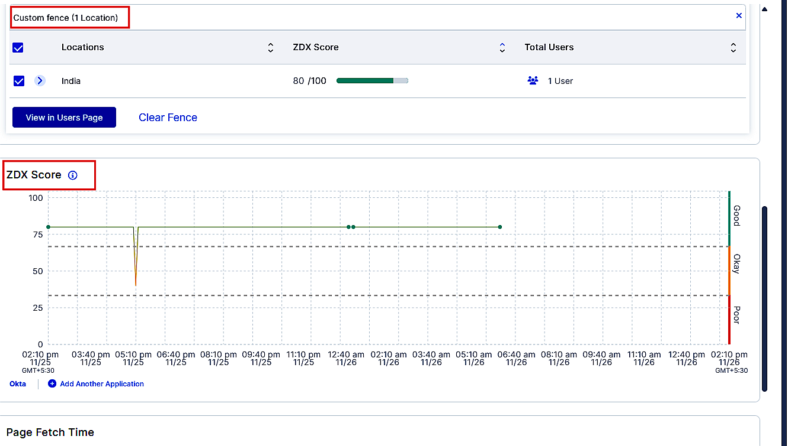
Okta vs. ServiceNow ZDX score comparison — if both degrade simultaneously, the cause is likely shared infrastructure (network/Zscaler). If only one degrades, it's app-specific.
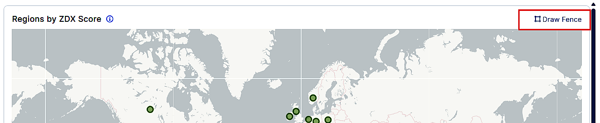
Okta ZDX score over time — correlate score dips with known events or incidents reported by users.
3 View Probe Status and Analyze Score
Navigate to the Probe Status panel for the application.
View the web probe metrics: DNS Time, TCP Connect, Server Response, Page Fetch Time.
Click Analyze Score to see the factor breakdown.
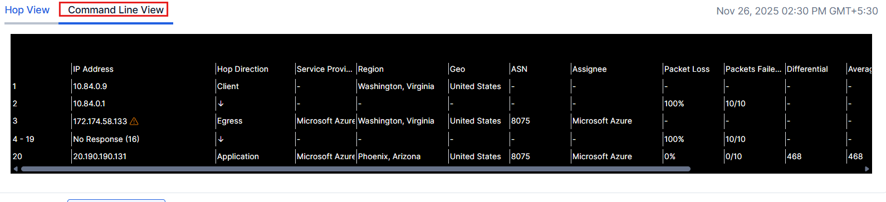
Probe Status — synthetic probes run continuously from endpoints, measuring each stage of the connection independently.
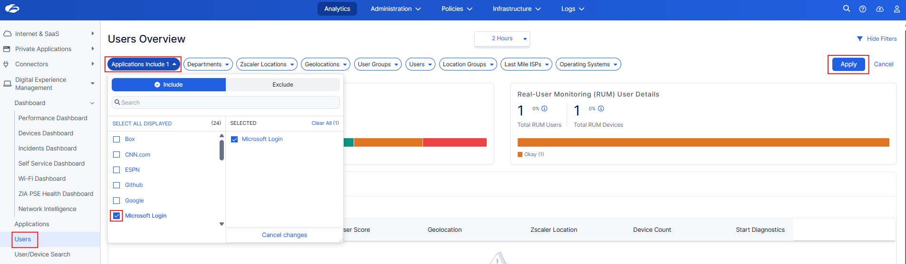
Web probe metrics — DNS Time, TCP Connect, Server Response, and Page Fetch Time shown separately to pinpoint the bottleneck stage.
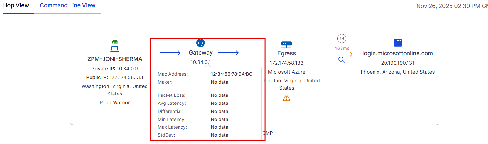
Analyze Score button — the Y-Engine analyzes probe data to identify the root-cause factor driving the ZDX score down.
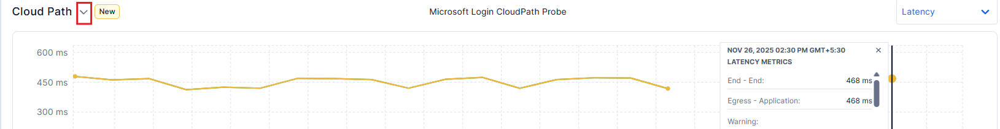
Analyze Score panel — each contributing factor (Wi-Fi, DNS, TCP, server response) is weighted by its impact on the overall ZDX score.
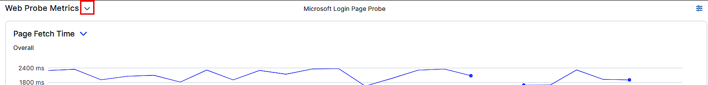
Score factors table — ranked contribution of each metric to the overall ZDX score degradation. The top factor is the primary root cause.
Task 14.5 — Explore User Overview
1 Navigate to Users and filter by score
Navigate to ZDX → Users.
Filter by ZDX Score: Poor / Okay to find users with degraded experience.
Select a user (e.g., Joni Sherman) to view their device detail.
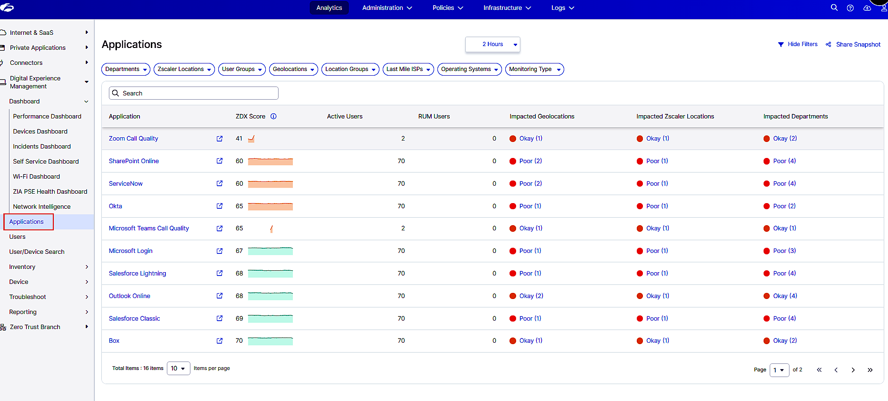
User Overview filtered by Poor/Okay — quickly surface users experiencing degraded digital experience across all their apps.
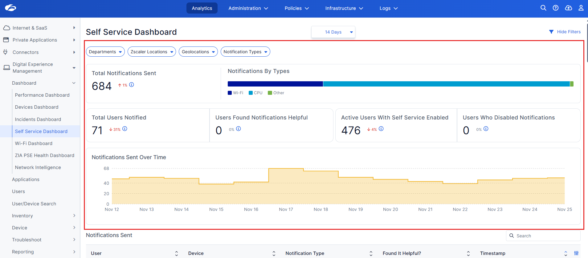
Per-user application ZDX scores — see which specific apps a user is experiencing problems with versus which are fine.
2 View user device details and Hop View
Click on Joni Sherman to open her device detail page.
View her ZDX Score over time and the probe metrics.
Click Hop View to visualise the cloud path and identify which segment has the highest latency.
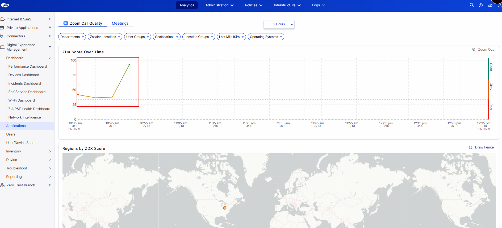
Joni Sherman's device detail — ZDX Score history, application performance, and device-level metrics for a specific user.
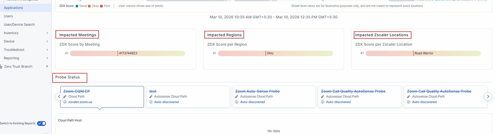
User ZDX Score over time — the score history shows when degradation started and whether it's ongoing or resolved.
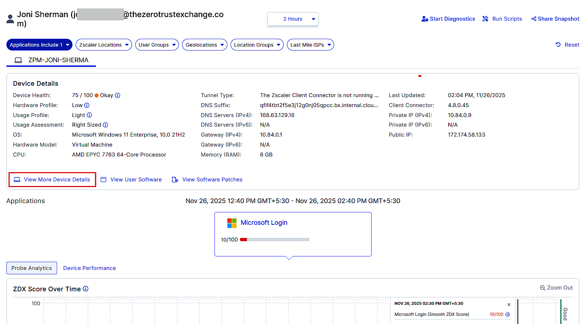
Hop View — visualises each segment of the path (device → local network → Zscaler ZTE → app server) with latency per hop.
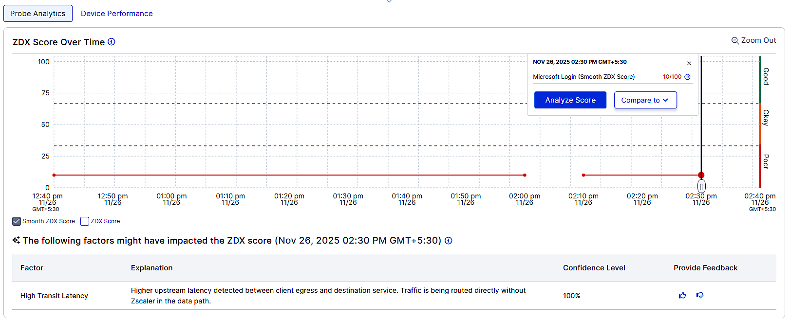
Command-line hop table — raw latency data for each hop, equivalent to a traceroute but continuously monitored by ZDX probes.
3 Explore India fence and ZDX score
In the map or geography filters, select the India region.
Observe the ZDX score pattern for users in this region.
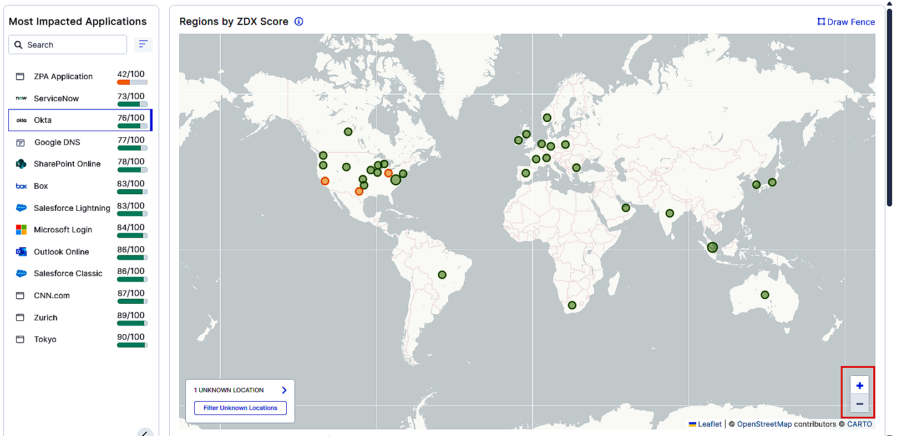
India geography fence — scoping to India reveals regional-specific ZDX score patterns for targeted investigation.
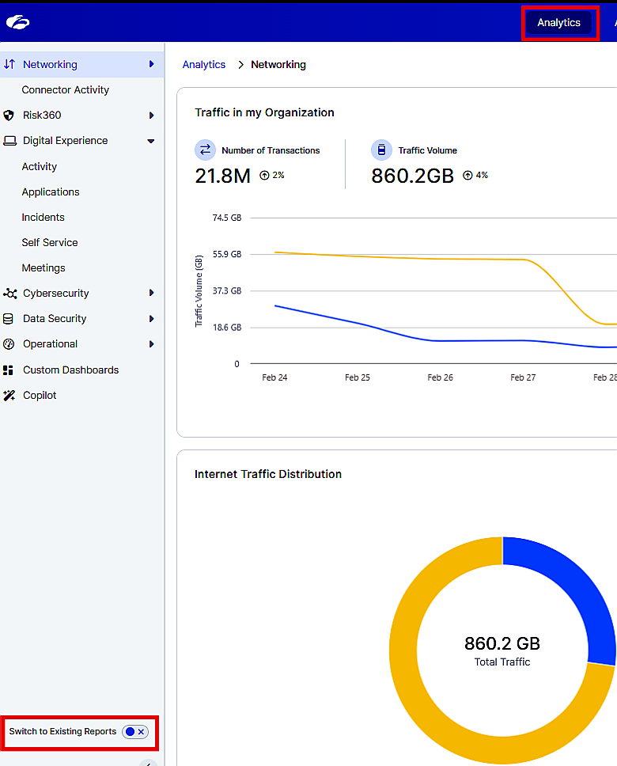
Networking Traffic overview — shows traffic volume and latency metrics for the selected geography.
🧠
MENTAL NOTE
ZDX has four primary dashboards: (1) Performance — global heatmap of ZDX scores by geography and app; (2) Incidents — automatically detected degradation events with epicenters; (3) Applications — per-app score over time, cloud path latency, probe metrics, Analyze Score; (4) Users — per-user score, device detail, Hop View, Device Events. The Y-Engine's Analyze Score identifies root cause by ranking factor contributions: Wi-Fi, DNS, TCP connect, server response.